The Dps catagory currently has 17 heroes those being junkrat, echo, soldier76, widowmaker, tracer, bastion, reaper, mei, symmetra, sombra, genji, hanzo, cassidy(Mccree), torbjorn, pharah, ashe, and sojourn
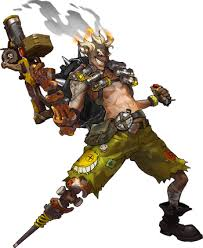
Junkrat is an outcast from junkertown that uses fights his enemies using his grenade launcher, cuncussion mines, bear trap, and rip tire, which he has roll into an enemy and explode, with the help of, his friend, roadhog
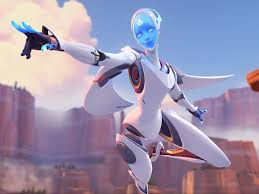
Echo is a device created to be able to fight and mimic others, she is also a close friend to Mccree who also saved her from being stolen while she was deactivated in her container. She fights by shooting pulses through her fingers, is able to fly freely and hover down, can fire a compressed shot that explodes, and can mimic others.
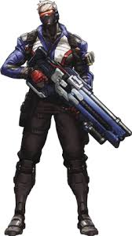
Soldier 76 is a member of the first overwatch devision who fought against the first omnic crisis. He fights using his assault rifle that can also fire nano missles, a biotic healing that he can place on the ground to heal allies in radius of it, and his tacticle visor that basically gives him aimbot.
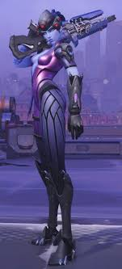
Widowmaker is a woman with a skin condition that turned her skin blue and after the death of her husband got fuled by rage and became a assassin for hire that happened to be hired by talon. She uses her gun that can switch between a assault rifle and a sniper, a venom mine that spits out poisonous gas if someone walks by it, a grapple, and a visor that gives her thermal vision.
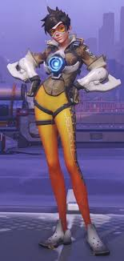
Tracer was trapped in a time loop until winston gave her a device that stabilies her while allows her to control her time abilities. She fights using two automatic pistols, can dash through time, can rewind herself causing all damage done to her in the timeframe that she has unwound being undone, and is able to throw the device as a bomb.
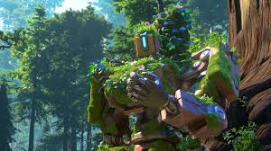
Bastion is an omnic that reawakened after being broke down for years and with no memory of who he was, he eventaully joined overwatch. He uses his right hand, which is a gun, to shoot, is able to turn himself into a minigun turret and as of recently is able to move in that state, a grenade, and while he used to be able to turn into a mobile cannon, he can turn into a mortar with three shots.
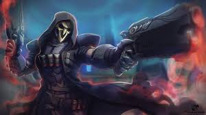
Reaper is a undead man that after being killed by Soldier 76 was revived by Moira causing him to basically become death but with shotguns and so he joined her in talon. He is able to teleport, enter a intangible state, however he is able to fight in said state, and uses his shotguns that heal him when he shoots someone.
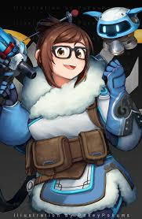
Mei is the last survivor of a expedition team that was living in the arctic after everyone else died in their cryostatis chambers, she uses a gun that hyper cools projectiles causing it to be able to slow her enemies while damaging them and is able to shoot icicles, she can also use it to build ice walls, and a quickly freeze herself to heal, she is also able to have her robot, snowball, rain down a radius of hyper cooled ice to freeze enemies in a area.
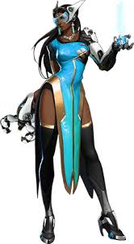
Symmetra is a visionary that will stop at nothing to make her "perfect world" and so she despises lucio after he lead a riot that freed a city from her control. Her items include a proton gun, 3 laser mini-turrets, a teleporter, and a proton barrier.
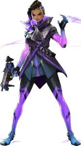
Sombra is a theif and a member of talon that will betray anyone and everyone if it means that she can get more out of something for herself and in order to make her able to hack anything at anytime, she had a device implanted in her that allows her to hack anything on the spot. Her kit includes a SMG, a teleportation device, and she can hack enemies to disable their abilities.
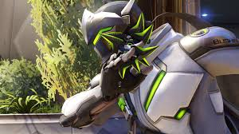
Gemji is a ninja trained by the shimada clan alongside his brother Hanzo and their friend kiriko. After being struck down by hanzo, Mercy replaced his body with cybernetics so that he could continue on living. His kit includes shurikens, a wakizashi, and his katana that his dragon spirit resides in.
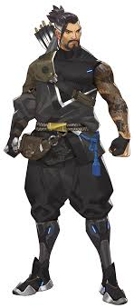
Hanzo is a scout ninja that was also trained in the shimada clan with genji and kiriko. After striking down his brother, Genji, he put himself into solitude while also fighting off assassins sent after him. His main weapon uses a bow which has special arrows which includes a recon arrow and a scatter arrow, that he only had in the begining of overwatch 1, he is also able to use his dragon spirit to quick fire arrows and to infuse a arrow with the dragon spirit.
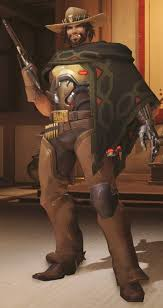
Mccree is a cowboy that use to work with Ashe before betraying her, causing him to have to work solo until he rescues echo from almost getting stolen by her. His kit includes a six shooter pistol, a flash bang that is now a grenade, and he can roll to instantly reload his gun.
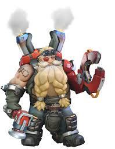
Torbjorn was a highly known weapons dealer who had to leave due to his employers wanting to control his weapons with computer intelligence. His weapons include a pistol/shotgun combonation he made, a turret along with a hammer to upgrade/repair it, and he is able to fire molten lava from his prosthetic arm.
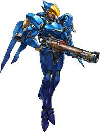
Pharah used to be a high ranking officer in the egyptian army before she joined overwatch. she is also the daughter of Ana, who didn't want her to fight. Her equiptment includes a rocket launcher, a concussion blast, and a jetpack.
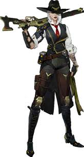
Ashe is a bandit who holds a grudge against Mccree after being backstabbed by him. Her kit includes a lever action rifle, a stick of dynamite, a flintlock pistol, and she is able to call on bob to have him run in and use his arm that functions like a gun.
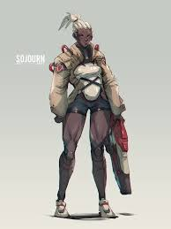
Sojourn is a soldier that became a overwatch captain to help those to have been made victims to the evils of the world. Her kit includes a assault rifle that also works as a rail gun that charges as she does damage, a device that can be fired to cause a AOE of damage where it lands, and she can overclock herself to be able to constantly charge her railgun regardless of if she is doing damage or not for a short time.